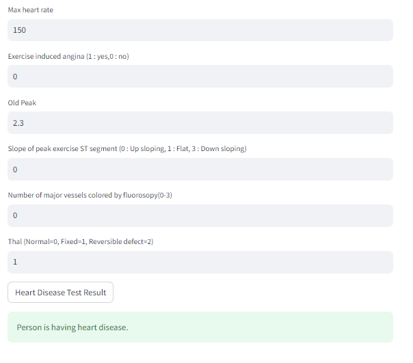
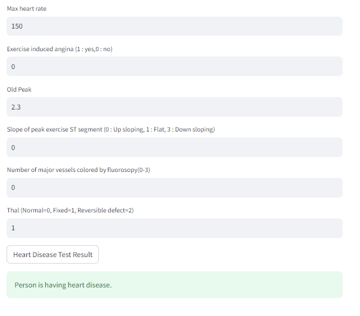

Profile
Aspiring software developer with strong foundation in full stack development, object-oriented programming and data structures. Passionate about building scalable applications and keen to contribute in all stages of the software development lifecycle.
Projects
My projects showcase a diverse range of technical skills from web development to machine learning, demonstrating practical application of concepts learned during my academic journey.
Self Portfolio -----> Github Link
Created a responsive portfolio showcasing projects, skills and hobbies with learned UI techniques. Implemented modern design principles and interactive elements for enhanced user experience.
Technologies Used: HTML, CSS, JavaScript
Live Demo: swaathi-portfolio.vercel.app
Blog Site - Quill Nest -----> Github Link
Built a full-stack blog application with React frontend and Node.js backend. Implemented user authentication, real-time updates, and comprehensive CRUD operations. Developed and tested REST APIs using Postman for reliable data communication. Deployed on Render with MongoDB database integration for scalable content management.
Technologies Used: React, Node.js, MongoDB, REST APIs, Cloud Hosting
Live Demo: View Live
Customer Feedback Management System -----> Github Link
Built a comprehensive full-stack platform with Node.js, Express, and MySQL. Implemented separate customer and admin workflows with role-based access control. Developed REST APIs for feedback submission, retrieval, and management (tested via Postman). Created admin dashboard with analytics and reporting features for business insights.
Technologies Used: MySQL, Node.js, Express, REST APIs
Resume PDF Generator -----> Github Link
Built a web-based resume generator using HTML, CSS, and JavaScript. Implemented dynamic input fields for personal and professional details. Integrated jsPDF library to export resume data into structured PDF format. Enabled seamless, client-side resume generation without backend dependencies.
Technologies Used: HTML, CSS, JavaScript, jsPDF
Java-Based Chat Application -----> Github Link
Developed a real-time desktop chat system using Java Swing for the user interface. Utilized file-based communication and multithreading for asynchronous message monitoring. Implemented GUI features including message display, scrollable chat window, and input handling.
Technologies Used: Java, Swing, File I/O, Multithreading
AI Career Guidance Platform -----> Github Link
AI-powered career guidance system built during the SNUC Hackathon by Team HackHerWay. Offers resume-job matching using NLP, automated LaTeX PDF generation, cover letter creation, AI-driven career tests, and a chatbot for career support. Integrated real-time video interview sentiment analysis using Whisper AI and computer vision to provide feedback on facial expressions, speech patterns, and tone.
Technologies Used: NLP, Machine Learning, Whisper AI, LaTeX, Chrome Extension, Computer Vision
Heart Disease Prediction using ML -----> Github Link
Built a supervised machine learning model to predict heart disease based on medical features. Used scikit-learn for training and evaluating models; achieved reliable prediction performance. Serialized the trained model using Pickle for reuse and deployment. Developed a Python script to take user input, reshape data, and generate real-time predictions.
Technologies Used: Python, scikit-learn, NumPy, Pickle
 

Work Experience
Web Development Intern - RISE Program
Tamizhan Skills
June 2025 – July 2025
Completed a focused internship building responsive web applications using HTML, CSS, JavaScript, and React. Enhanced a resume builder by integrating AI-driven features for tailored user recommendations. Improved security by implementing authentication and secure routing, boosting user data protection. Utilized Git and GitHub for version control and efficient collaborative development.
Member
Delta
Jan 2024
Participated in couple of Hackathons and gained experience. Currently enhancing my skills in web development and deep learning.
Writer
Medium
Feb 2024
Wrote a series of articles and enhancing my writing skills through this website.
Achievements & Awards
Reliance UG Scholar
Reliance Foundations
2024
Selected among 5,000 from over 58,000 applicants based on strong analytical and aptitude skills. Recognized for exceptional problem-solving and cognitive abilities.
Music Grade Exams (Grade 4)
Carnatic Music
Ongoing
Successfully completed up to Grade 4 in Carnatic music. Passionate about Carnatic music; perform regularly and have won prizes in televised and live competitions.
Certificate of Excellence – Ahaguru
Academic Excellence
Class 11 and 12
Awarded for outstanding academic performance in Mathematics and Physics.
All Rounder Award
School Recognition
Class 9
Awarded for excellence in academics, sports, and extracurricular activities.
Music Achievements
Various Competitions
Ongoing
Performed a Carnatic music concert at Padmavathy Thayar Temple. Secured 3rd prize in Jai Sathguru Fine Arts District Level Competition. Won 1st prize in DD Podhigai's "Serndhu Paaduvom" music program. Maintain a personal YouTube channel "Swaathi Ragas" to share vocal performances and devotional music.
Other Notable Achievements
Various Competitions
School Years
1st Prize – Carom (Class 12), Best Artist – Radha Krishna Drawing (International Drawing Competition), Basketball – Class 10 (1st place in zonal-level tournament), 2nd Prize – Tamil Speech, Muthamizh Mandram (Class 9), Multiple School-Level Awards in slogan writing, sloka recitation, music, Tamil speech, throwball, and other events.
Technical Skills (Click on the green button for credentials)
Programming Languages
C Python C++ Java JavaScript SQLWeb Technologies
HTML CSS JavaScript React.js Node.jsDatabases
MySQL MongoDB SQL NoSQLTools & Technologies
Git GitHub VS Code Eclipse Notion Postman REST APIs Cloud HostingCore Computer Science
Data Structures Algorithms Object Oriented Programming Database Management Systems Operating Systems Artificial Intelligence Data Science Linear Algebra Statistics and Probability Discrete Mathematics Computer Organization and architectureAdditional Certifications
Full Stack Development ECMA Script 6+ Search Techniques for Web Developers DevOps Deep Learning Modern C++ - NPTEL Introduction to Large Language Models (LLMs) - NPTEL The Basics of Google Cloud Compute - Google CloudLanguages
- English
- Tamil
- Hindi
- German
Education
B.Tech Artificial Intelligence and Data Science
Shiv Nadar University, Chennai
Aug 2023 – June 2027
CGPA: 8.67 (Up to 4th Semester)
Higher Secondary Education
The PSBB Millennium - Chennai
Jun 2016 – June 2023
Class 12: 466/500 (93.2%)
Class 10: 469/500 (93.8%)
All Rounder Award - Recognition for excellence in academics, sports, and extracurricular activities
Interests & Hobbies
Music
Passionate about Carnatic music; perform regularly and have won prizes in televised and live competitions. Maintain a personal YouTube channel "Swaathi Ragas" to share vocal performances and devotional music.
Art & Craft
Created detailed traditional artworks and handmade models, including a miniature model of the Ram Mandir and several intricate deity portraits.
Technology Exploration
Keen on exploring modern technologies like AI, web development, and digital productivity tools.
Problem Solving
Enthusiastic about coding challenges, logical puzzles, and algorithmic thinking.